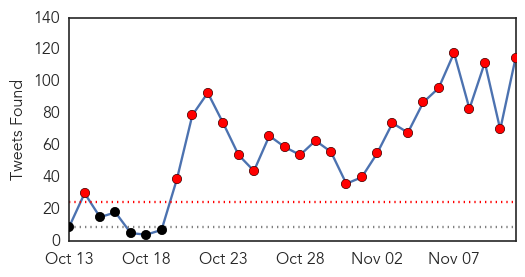
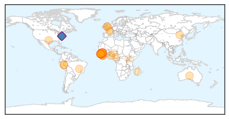
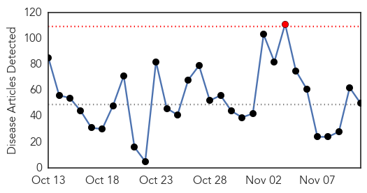
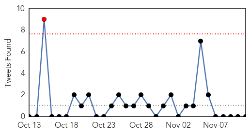
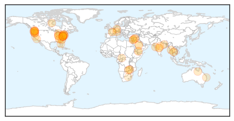

Ebola
30-Day Web Trend
2 alerts, 0 warnings

30-Day Twitter Trend
24 alerts, 0 warnings

Article Locations
Article Confidences
Top Articles:
- 1.000
- Two children being tested for Ebola virus at Royal Children's Hospital Melbourne are clear
- 1.000
- Ebola: Steps must be taken to prevent catastrophic spread - up to 1.5 million could be infected by January
- 1.000
- The Daily Free Press — The Daily Free Press
- 0.999
- BMA — Praise for doctors' bravery during Ebola crisis
- 0.998
- Ebola Cases Around the World Down to The Single Digits
- 0.998
- JUBILATION IN FREETOWN AS SIERRA LEONE DECLARED EBOLA-FREE
- 0.998
- Ebola remains in Guinea, where the outbreak began
- 0.997
- Ebola remains only in Guinea, where outbreak began
- 0.997
- Sierra Leone declared Ebola free in boon for African mining
- 0.996
- When will the true Ebola Heroes be recognized?National Accord Newspaper
- 0.992
- Ebola ‘Don Don’ in Sierra Leone: Celebration, Tears and Reflection
- 0.988
- Brazil: Man monitored for suspected Ebola
- 0.986
- Brazilian man being tested for Ebola; results in 24 hours
- 0.986
- Brazilian man being tested for Ebola; results in 24 hours
- 0.986
- Brazilian man being tested for Ebola; results in 24 hours
- 0.986
- Sierra Leoneans in USA Memorialize End of Ebola & Reminisce Victims
- 0.984
- Brazilian man tested for Ebola
- 0.980
- Brazil tests man for Ebola, puts others under observation
- 0.977
- Brazil tests man for Ebola, puts others under observation
- 0.968
- Army spent €40m to treat zero Ebola victims
- 0.966
- Solar Light Vigil and March in Sierra Leone to Honour Health Care Heroes on the Eve of the Countdown to Zero Ebola Case
- 0.960
- UNMEER urges SLAJ to rebrand the Yellow Ribbon « Awoko Newspaper
- 0.956
- Impact of China-West Africa Healthcare Cooperation – China Africa Reporting
- 0.955
- Brazilian man being tested for Ebola; results in 24 hours
- 0.945
- How faith leaders became vital in the fight against Ebola
- 0.930
- SEAGA Congratulates President Koroma for Ending the Ebola Outbreak
- 0.929
- SEAGA Congratulates President Koroma for Ending the Ebola Outbreak
- 0.920
- South america tests guy for Ebola, puts others under observation
- 0.898
- LIBERIA: USAID, Global Community "Ebola Response ALERT Project" Gains Momentum
- 0.733
- Ebola vaccine test to go ahead in the North West region
- 0.728
- The Financialization of Ebola
- 0.676
- Elder Bednar visits Africa, missionaries return to Ebola-free Liberia
- 0.648
- Status of Emergency Obstetric and Newborn Care Consultative Conference Kicks off in Freetown November 12
- 0.629
- Ebola fight soldier and maternity care campaigner both awarded the OBE
- 0.619
- Nursing and Midwifery Education Practice Workshop kicks off in Freetown
- 0.608
- Sierra Leone News: ‘We are National Heroes’ -Burial team member « Awoko Newspaper
- 0.588
- Institute of Human Virology Awarded $13M to Strengthen Laboratory Services in Kenya, and $10M to Enhance Biosecurity Infrastructure in Nigeria
- 0.564
- UGA Receives $1.49 Million Grant to Combat TB in Uganda
- 0.529
- Missionaries head back to West Africa after Ebola outbreak
- 0.512
- When the Country is United, We Achieve Great things…….Says Rtd. Brig. Bio in London
Top Tweets:
- 0.999
- World Health Organization praises Sierra Leone for stopping Ebola transmission - https://t.co/0mGSylZQ3t ebola
- 0.999
- Sierra Leone: Ebola outbreak over - https://t.co/xRKkPibRzN ebola
- 0.998
- Ebola outbreak ends in Sierra Leone - https://t.co/2T95MGpyuE ebola
- 0.997
- Sierra Leone is Now Ebola - https://t.co/a8JI5PeQuv ebola
- 0.997
- Ebola outbreak in West Africa - https://t.co/bFsG2qWUB4 ebola
- 0.996
- Rebuilding Sierra Leone's economy after Ebola - https://t.co/XTrEPnUFcb ebola
- 0.996
- BREAKING!!!!! EBOLA HOSPITAL CLOSES REFUGEE WITH EBOLA https://t.co/zBbfJ7Tj7N VeteransDay 2DaysTillPURPOSE WhatAFeeling Mizzou Ebola
- 0.995
- ebola - https://t.co/lIMZ0QvXHd ebola
- 0.995
- Ebola - https://t.co/Y92qOGlfRk ebola
- 0.991
- BREAKING!!!!! EBOLA PATIENT ADMITTED HOSPITAL CLOSES!!! WEST AFRICAN REFUGEE WITH EBOLA https://t.co/zBbfJ7Tj7N
- 0.991
- @ BREAKING!!!!! EBOLA PATIENT ADMITTED HOSPITAL CLOSES!!! WEST AFRICAN REFUGEE WITH EBOLA https://t.co/zBbfJ7Tj7N
- 0.991
- BREAKING!!!!! EBOLA PATIENT ADMITTED HOSPITAL CLOSES!!! WEST AFRICAN REFUGEE WITH EBOLA https://t.co/zBbfJ8aTZl
- 0.991
- BREAKING!!!!! EBOLA PATIENT ADMITTED HOSPITAL CLOSES!!! WEST AFRICAN REFUGEE WITH EBOLA https://t.co/zBbfJ7Tj7N
- 0.991
- BREAKING!!!!! EBOLA PATIENT ADMITTED HOSPITAL CLOSES!!! WEST AFRICAN REFUGEE WITH EBOLA https://t.co/zBbfJ7Tj7N
- 0.991
- BREAKING!!!!! EBOLA PATIENT ADMITTED HOSPITAL CLOSES!!! WEST AFRICAN REFUGEE WITH EBOLA https://t.co/zBbfJ7Tj7N
- 0.991
- BREAKING!!!!! EBOLA PATIENT ADMITTED HOSPITAL CLOSES!!! WEST AFRICAN REFUGEE WITH EBOLA https://t.co/zBbfJ7Tj7N
- 0.991
- BREAKING!!!!! EBOLA PATIENT ADMITTED HOSPITAL CLOSES!!! WEST AFRICAN REFUGEE WITH EBOLA https://t.co/zBbfJ7Tj7N
- 0.991
- BREAKING!!!!! EBOLA PATIENT ADMITTED HOSPITAL CLOSES!!! WEST AFRICAN REFUGEE WITH EBOLA https://t.co/zBbfJ7Tj7N
- 0.991
- BREAKING!!!!! EBOLA PATIENT ADMITTED HOSPITAL CLOSES!!! WEST AFRICAN REFUGEE WITH EBOLA https://t.co/zBbfJ7Tj7N
- 0.991
- BREAKING!!!!! EBOLA PATIENT ADMITTED HOSPITAL CLOSES!!! WEST AFRICAN REFUGEE WITH EBOLA https://t.co/zBbfJ7Tj7N
- 0.991
- BREAKING!!!!! EBOLA PATIENT ADMITTED HOSPITAL CLOSES!!! WEST AFRICAN REFUGEE WITH EBOLA https://t.co/zBbfJ7Tj7N
- 0.991
- BREAKING!!!!! EBOLA PATIENT ADMITTED HOSPITAL CLOSES!!! WEST AFRICAN REFUGEE WITH EBOLA https://t.co/zBbfJ7Tj7N
- 0.991
- BREAKING!!!!! EBOLA PATIENT ADMITTED HOSPITAL CLOSES!!! WEST AFRICAN REFUGEE WITH EBOLA https://t.co/zBbfJ7Tj7N
- 0.991
- BREAKING!!!!! EBOLA PATIENT ADMITTED HOSPITAL CLOSES!!! WEST AFRICAN REFUGEE WITH EBOLA https://t.co/zBbfJ7Tj7N
- 0.991
- BREAKING!!!!! EBOLA PATIENT ADMITTED HOSPITAL CLOSES!!! WEST AFRICAN REFUGEE WITH EBOLA https://t.co/zBbfJ7Tj7N
- 0.991
- BREAKING!!!!! EBOLA PATIENT ADMITTED HOSPITAL CLOSES!!! WEST AFRICAN REFUGEE WITH EBOLA https://t.co/zBbfJ7Tj7N
- 0.991
- BREAKING!!!!! EBOLA PATIENT ADMITTED HOSPITAL CLOSES!!! WEST AFRICAN REFUGEE WITH EBOLA https://t.co/zBbfJ7Tj7N
- 0.991
- BREAKING!!!!! EBOLA PATIENT ADMITTED HOSPITAL CLOSES!!! WEST AFRICAN REFUGEE WITH EBOLA https://t.co/zBbfJ7Tj7N
- 0.991
- BREAKING!!!!! EBOLA PATIENT ADMITTED HOSPITAL CLOSES!!! WEST AFRICAN REFUGEE WITH EBOLA https://t.co/zBbfJ7Tj7N
- 0.991
- BREAKING!!!!! EBOLA PATIENT ADMITTED HOSPITAL CLOSES!!! WEST AFRICAN REFUGEE WITH EBOLA https://t.co/zBbfJ7Tj7N
- 0.991
- BREAKING!!!!! EBOLA PATIENT ADMITTED HOSPITAL CLOSES!!! WEST AFRICAN REFUGEE WITH EBOLA https://t.co/zBbfJ7Tj7N
- 0.991
- BREAKING!!!!! EBOLA PATIENT ADMITTED HOSPITAL CLOSES!!! WEST AFRICAN REFUGEE WITH EBOLA https://t.co/zBbfJ7Tj7N
- 0.991
- BREAKING!!!!! EBOLA PATIENT ADMITTED HOSPITAL CLOSES!!! WEST AFRICAN REFUGEE WITH EBOLA https://t.co/zBbfJ7Tj7N
- 0.991
- BREAKING!!!!! EBOLA PATIENT ADMITTED HOSPITAL CLOSES!!! WEST AFRICAN REFUGEE WITH EBOLA https://t.co/zBbfJ7Tj7N
- 0.991
- BREAKING!!!!! EBOLA PATIENT ADMITTED HOSPITAL CLOSES!!! WEST AFRICAN REFUGEE WITH EBOLA https://t.co/zBbfJ7Tj7N
- 0.991
- BREAKING!!!!! EBOLA PATIENT ADMITTED HOSPITAL CLOSES!!! WEST AFRICAN REFUGEE WITH EBOLA https://t.co/zBbfJ7Tj7N
- 0.991
- BREAKING!!!!! EBOLA PATIENT ADMITTED HOSPITAL CLOSES!!! WEST AFRICAN REFUGEE WITH EBOLA https://t.co/zBbfJ7Tj7N
- 0.991
- BREAKING!!!!! EBOLA PATIENT ADMITTED HOSPITAL CLOSES!!! WEST AFRICAN REFUGEE WITH EBOLA https://t.co/zBbfJ7Tj7N
- 0.991
- BREAKING!!!!! EBOLA PATIENT ADMITTED HOSPITAL CLOSES!!! WEST AFRICAN REFUGEE WITH EBOLA https://t.co/zBbfJ7Tj7N
- 0.991
- BREAKING!!!!! EBOLA PATIENT ADMITTED HOSPITAL CLOSES!!! WEST AFRICAN REFUGEE WITH EBOLA https://t.co/zBbfJ7Tj7N
- 0.991
- BREAKING!!!!! EBOLA PATIENT ADMITTED HOSPITAL CLOSES!!! WEST AFRICAN REFUGEE WITH EBOLA https://t.co/zBbfJ7Tj7N
- 0.991
- BREAKING!!!! EBOLA PATIENT ADMITTED HOSPITAL CLOSES!!! WEST AFRICAN REFUGEE WITH EBOLA https://t.co/zBbfJ7Tj7N
- 0.991
- BREAKING!!! EBOLA PATIENT ADMITTED HOSPITAL CLOSES!!! WEST AFRICAN REFUGEE WITH EBOLA https://t.co/b3OIkqfNeJ
- 0.991
- @TexansCheer BREAKING!!!!! EBOLA PATIENT ADMITTED HOSPITAL CLOSES!!! WEST AFRICAN REFUGEE WITH EBOLA https://t.co/zBbfJ7Tj7N
- 0.991
- @ChrisChristie BREAKING!!!!! EBOLA PATIENT ADMITTED HOSPITAL CLOSES!!! WEST AFRICAN REFUGEE WITH EBOLA https://t.co/zBbfJ7Tj7N
- 0.991
- BREAKING!!!!! EBOLA PATIENT ADMITTED HOSPITAL CLOSES!!! WEST AFRICAN REFUGEE WITH EBOLA https://t.co/zBbfJ7Tj7N
- 0.991
- BREAKING!!!!! EBOLA PATIENT ADMITTED HOSPITAL CLOSES!!! WEST AFRICAN REFUGEE WITH EBOLA https://t.co/zBbfJ7Tj7N
- 0.991
- BREAKING!!!!! EBOLA PATIENT ADMITTED HOSPITAL CLOSES!!! WEST AFRICAN REFUGEE WITH EBOLA https://t.co/zBbfJ7Tj7N
- 0.991
- BREAKING!!!!! EBOLA PATIENT ADMITTED HOSPITAL CLOSES!!! WEST AFRICAN REFUGEE WITH EBOLA https://t.co/zBbfJ7Tj7N
- 0.991
- BREAKING!!!!! EBOLA PATIENT ADMITTED HOSPITAL CLOSES!!! WEST AFRICAN REFUGEE WITH EBOLA https://t.co/zBbfJ7Tj7N
Showing top 50 tweets...
Unknown
30-Day Web Trend
1 alerts, 0 warnings

30-Day Twitter Trend
1 alerts, 0 warnings

Article Locations
Article Confidences
Top Articles:
- 0.969
- Doctors urge patients to get flu vaccine as soon as possible
- 0.962
- The infections at York Hospital, explained
- 0.953
- Spotlight on dengue danger after actor stricken with disease
- 0.937
- Washington Co. Health Department Offering Free Flu Shots
- 0.922
- Clinics in Thailand target antibiotic-resistant gonorrhoea
- 0.916
- GeneOne, Inovio's MERS vaccine enters PhI at Walter Reed
- 0.904
- 5 moms sue NYC over mandatory flu vaccine for pre-K, daycare children
- 0.903
- The Latest: 45 people sickened in Northwest E. coli outbreak
- 0.901
- Customer in Washington sues Chipotle over E. coli infection
- 0.881
- Another York Hospital patient with rare open heart surgery-related infection dies
- 0.854
- Rash of E. coli cases highlights foodborne illness problem
- 0.846
- Sick at School? Read Our Survival Guide For College Students
- 0.842
- Tackling the world’s deadliest childhood disease
- 0.839
- Four cases of canine parvovirus confirmed in Pacific County
- 0.817
- WARNING GRAPHIC IMAGE: Jab shortage puts rabbits at risk from lethal disease
- 0.777
- 185 call about bacteria
- 0.772
- WSU student recovering from TB
- 0.759
- University: Student with tuberculosis has recovered
- 0.757
- Rash of E. coli cases highlights foodborne illness problem
- 0.756
- Rash of E. coli cases highlights foodborne illness problem
- 0.749
- Foodborne illness more common than public realizes: US experts - National
- 0.747
- Zambia National Broadcasting Corporation
- 0.730
- Police and migrants clash for third straight night in Calais 'Jungle'
- 0.708
- RSV Vax Shows Promise in Early Study
- 0.707
- Briton faces jail for trying to smuggle girl out of Calais migrant camp
- 0.707
- Suu Kyi calls for ‘national reconciliation’ talks with Burma military
- 0.705
- New Government, Old Task: Provision of drinking water in rural areas of Bihar
- 0.703
- Doctors concerned about spike in respiratory virus cases
- 0.693
- Provision of drinking water in rural areas of Bihar , AniNews.in
- 0.681
- Tackling a neglected disease with math
- 0.679
- Following E. coli outbreak, experts say foodborne illness is more common than public realizes
- 0.655
- EU settlement labelling plan evokes 'dark memories' for Netanyahu
- 0.655
- Queensland's worst outbreak of syphilis in 30 years rampant in state's north
- 0.645
- UN peacekeeper killed in Central African Republic
- 0.643
- Help Deliver Life With WaterAid This Winter
- 0.636
- Chipotle reopening Northwest restaurants;
- 0.625
- E. coli mystery unsolved, but Chipotle to reopen Wednesday
- 0.624
- OP-ED: WellSpan doing the right thing for patients, community
- 0.611
- Chipotle to reopen 43 restaurants after E. coli all-clear
- 0.607
- Bush syphilis rates soar
- 0.598
- Foodborne Illness Cases Pile Up For Popular Mexican Grill
- 0.569
- Dr. Richard Isaacs, MD: The Willingness to Serve - Base Articles
- 0.567
- Swiss Report Highlights Danger of Drug-Resistant Tuberculosis
- 0.534
- le Parlement demande aux États membres de verser l'argent promis
- 0.534
- After E-Coli Situation Fizzles Out, Chipotle Will Reopen 43 Restaurants
- 0.532
- Yemen Hospitals ‘Deliberately’ Targeted In 100 Attacks Since March
- 0.530
- What next? WHO set to classify 'aging' as a disease to benefit BigPharma -- Health & Wellness -- Sott.net
- 0.524
- Chipotle closes 43 stores in E. coli outbreak
- 0.516
- Yemen: Attacks on health care facilities must stop
- 0.503
- "Induced" water shortage threatens development & health
Showing top 50 articles...
Top Tweets:
- 0.573
- Porque hablamos... y no usamos ese tiempo en darnos besos. (8)
- 0.547
- MERS superspreader infected 81 people in South Korea's outbreak. That's 44% of their outbreak right there. https://t.co/tN1DqSH8MK